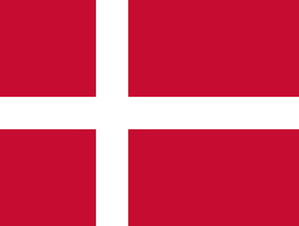

This webpage allows you to easily explore the different tenses of Danish verbs and their meaning in English. You can search by any column. In case you spot any mistake, feel free to open an issue or create a pull request on GitHub.
Vi taler

Dansk!
Author: Lorenzo
| English meaning | Infinitive | Present tense | Past tense | Perfect participle | Past perfect | Imperative |
|---|---|---|---|---|---|---|
| to accept | at acceptere | accepterer | accepterede | har accepteret | havde accepteret | accepter |
| to separate | at adskille | adskiller | adskilte | har adskilt | havde adskilt | adskil |
| to warn | at advare | advarer | advarede | har advaret | havde advaret | advar |
| to interrupt | at afbryde | afbryder | afbrød | har afbrudt | havde afbrudt | afbryd |
| to deliver | at afgive | afgiver | afgav | har afgivet | havde afgivet | afgiv |
| to determine | at afgøre | afgør | afgjorde | har afgjort | havde afgjort | afgør |
| to deliver | at aflevere | afleverer | afleverede | har afleveret | havde afleveret | aflever |
| to cancel | at aflyse | aflyser | aflyste | har aflyst | havde aflyst | aflys |
| to supersede | at afløse | afløser | afløste | har afløst | havde afløst | afløs |
| to abolish | at afskaffe | afskaffer | afskaffede | har afskaffet | havde afskaffet | afskaf |
| to complete | at afslutte | afslutter | afsluttede | har afsluttet | havde afsluttet | afslut |
| to reveal | at afsløre | afslører | afslørede | har afsløret | havde afsløret | afslør |
| to reject | at afvise | afviser | afviste | har afvist | havde afvist | afvis |
| to recommend | at anbefale | anbefaler | anbefalede | har anbefalet | havde anbefalet | anbefal |
| to place | at anbringe | anbringer | anbragte | har anbragt | havde anbragt | anbring |
| to know | at ane | aner | anede | har anet | havde anet | |
| to recognize | at anerkende | anerkender | anerkendte | har anerkendt | havde anerkendt | anerkend |
| to enter | at angive | angiver | angav | har angivet | havde angivet | angiv |
| to relate | at angå | angår | angik | har angået | havde angået | |
| to arrest | at anholde | anholder | anholdt | har anholdt | havde anholdt | anhold |
| to arrive | at ankomme | ankommer | ankom | er ankommet | var ankommet | |
| to report | at anmelde | anmelder | anmeldte | har anmeldt | havde anmeldt | anmeld |
| to consider | at anse | anser | anså | har anset | havde anset | |
| to hire | at ansætte | ansætter | ansatte | har ansat | havde ansat | ansæt |
| to use | at anvende | anvender | anvendte | har anvendt | havde anvendt | anvend |
| to work | at arbejde | arbejder | arbejdede | har arbejdet | havde arbejdet | arbejd |
| to arrange | at arrangere | arrangerer | arrangerede | har arrangeret | havde arrangeret | arranger |
| to arrest | at arrestere | arresterer | arresterede | har arresteret | havde arresteret | arrester |
| to bake | at bage | bager | bagte | har bagt | havde bagt | bag |
| to knock | at banke | banker | bankede | har banket | havde banket | bank |
| to ask | at bede | beder | bad | har bedt | havde bedt | bed |
| to be at | at befinde | befinder | befandt | har befundet | havde befundet | |
| to bury | at begrave | begraver | begravede | har begravet | havde begravet | begrav |
| to limit | at begrænse | begrænser | begrænsede | har begrænset | havde begrænset | begræns |
| to begin | at begynde | begynder | begyndte | er begyndt | var begyndt | begynd |
| to commit | at begå | begår | begik | har begået | havde begået | begå |
| to process | at behandle | behandler | behandlede | har behandlet | havde behandlet | behandl |
| to keep | at beholde | beholder | beholdt | har beholdt | havde beholdt | behold |
| to need | at behøve | behøver | behøvede | har behøvet | havde behøvet | |
| to be sorry | at beklage | beklager | beklagede | har beklaget | havde beklaget | beklag |
| to confirm | at bekræfte | bekræfter | bekræftede | har bekræfted | havde bekræftet | bekræft |
| to notice | at bemærke | bemærker | bemærkede | har bemærket | havde bemærket | bemærk |
| to use | at benytte | benytter | benyttede | har benyttet | havde benyttet | benyt |
| to describe | at beskrive | beskriver | beskrev | har beskrevet | havde beskrevet | beskriv |
| to protect | at beskytte | beskytter | beskyttede | har beskyttet | havde beskyttet | beskyt |
| to decide | at beslutte | beslutter | besluttede | har besluttet | havde besluttet | beslut |
| to determine | at bestemme | bestemmer | bestemte | har bestemt | havde bestemt | bestem |
| to order | at bestille | bestiller | bestilte | har bestilt | havde bestilt | bestil |
| to pass | at bestå | består | bestod | har bestået | havde bestået | bestå |
| to occupy | at besætte | besætter | besatte | har besat | havde besat | besæt |
| to visit | at besøge | besøger | besøgte | har besøgt | havde besøgt | besøg |
| to pay | at betale | betaler | betalte | har betalt | havde betalt | betal |
| to mean | at betyde | betyder | betød | har betydet | havde betydet | betyd |
| to maintain | at bevare | bevarer | bevarede | har bevaret | havde bevaret | bevar |
| to prove | at bevise | beviser | beviste | har bevist | havde bevist | bevis |
| to move | at bevæge sig | bevæger sig | bevægede sig | har bevæget sig | havde bevæget sig | bevæg dig |
| to bite | at bide | bider | bed | har bidt | havde bidt | bid |
| to contribute | at bidrage | bidrager | bidrog | har bidraget | havde bidraget | bidrag |
| to bind | at binde | binder | bandt | har bundet | havde bundet | bind |
| to mix | at blande | blander | blandede | har blandet | havde blandet | bland |
| to become | at blive | bliver | blev | er blevet | var blevet | bliv |
| to blow | at blæse | blæser | blæste | har blæst | havde blæst | blæs |
| to live | at bo | bor | boede | har boet | havde boet | bo |
| to spread | at brede sig | breder sig | bredte sig | har bredt sig | havde bredt sig | bred dig |
| to bring | at bringe | bringer | bragte | har bragt | havde bragt | bring |
| to use | at bruge | bruger | brugte | har brugt | havde brugt | brug |
| to break | at bryde | bryder | brød | har brudt | havde brudt | bryd |
| to build | at bygge | bygger | byggede | har bygget | havde bygget | byg |
| to swap | at bytte | bytter | byttede | har byttet | havde byttet | byt |
| to wear | at bære | bærer | bar | har båret | havde båret | bær |
| to quote | at citere | citerer | citerede | har citeret | havde citeret | citer |
| to form | at danne | danner | dannede | har dannet | havde dannet | dan |
| to dance | at danse | danser | dansede | har danset | havde danset | dans |
| to share | at dele | deler | delte | har delt | havde delt | del |
| to participate | at deltage | deltager | deltog | har deltaget | havde deltaget | deltag |
| to discuss | at diskutere | diskuterer | diskuterede | har diskuteret | havde diskuteret | diskuter |
| to dominate | at dominere | dominerer | dominerede | har domineret | havde domineret | dominer |
| to drag | at drage | drager | drog | har draget | havde draget | drag |
| to turn | at dreje | drejer | drejede | har drejet | havde drejet | dreje |
| to drink | at drikke | drikker | drak | har drukket | havde drukket | drik |
| to drive | at drive | driver | drev | har drevet | havde drevet | driv |
| to kill | at dræbe | dræber | dræbte | har dræbt | havde dræbt | dræb |
| to discuss | at drøfte | drøfter | drøftede | har drøftet | havde drøftet | drøft |
| to dream | at drømme | drømmer | drømte | har drømt | havde drømt | drøm |
| to appear | at dukke op | dukker op | dukkede op | er dukket op | var dukket op | duk op |
| to cover | at dække | dækker | dækkede | har dækket | havde dækket | dæk |
| to die | at dø | dør | døde | er død | var død | dø |
| to judge | at dømme | dømmer | dømte | har dømt | havde dømt | døm |
| to leave | at efterlade | efterlader | efterlod | har efterladt | havde efterladt | efterlad |
| to own | at eje | ejer | ejede | har ejet | havde ejet | |
| to exist | at eksistere | eksisterer | eksisterede | har eksisteret | havde eksisteret | |
| to love | at elske | elsker | elskede | har elsket | havde elsket | elsk |
| to end | at ende | ender | endte | er endt | var endt | |
| to acknowledge | at erkende | erkender | erkendte | har erkendt | havde erkendt | erkend |
| to replace | at erstatte | erstatter | erstattede | har erstattet | havde erstatte | erstat |
| to fall | at falde | falder | faldt | er faldet | var faldet | fald |
| to catch | at fange | fanger | fangede | har fanget | havde fanget | fang |
| to maintain | at fastholde | fastholder | fastholdt | har fastholdt | havde fastholdt | fasthold |
| to determine | at fastslå | fastslår | fastslog | har fastslået | havde fastslået | slå fast |
| to fix | at fastsætte | fastsætter | fastsatte | har fastsat | havde fastsat | fastsæt |
| to get | at fatte | fatter | fattede | har fattet | havde fattet | fat |
| to celebrate | at fejre | fejrer | fejrede | har fejret | havde fejret | fejr |
| to find | at finde | finder | fandt | har fundet | havde fundet | find |
| to remove | at fjerne | fjerner | fjernede | har fjernet | havde fjernet | fjern |
| to escape | at flygte | flygter | flygtede | er flygtet | var flygtet | flygt |
| to move | at flytte | flytter | flyttede | er flyttet | var flyttet | flyt |
| to fly | at flyve | flyver | fløj | har / er fløjet | havde / var fløjet | flyv |
| to feed | at fodre | fodrer | fodrede | har fodret | havde fodret | fodr |
| to improve | at forbedre | forbedrer | forbedrede | har forbedret | havde forbedret | forbedr |
| to prepare | at forberede | forbereder | forberedte | har forberedt | havde forberedt | forbered |
| to connect | at forbinde | forbinder | forbandt | har forbundet | havde forfundet | forbind |
| to remain | at forblive | forbliver | forblev | er forblevet | var forblevet | forbliv |
| to allocate | at fordele | fordeler | fordelte | har fordelt | havde fordelt | fordel |
| to take place | at foregå | foregår | foregik | er foregået | var foregået | foregå |
| to occur | at forekomme | forekommer | forekom | er forekommet | var forekommet | forekom |
| to fall in love | at forelske sig | forelsker sig | forelskede sig | har forelsket sig | havde forelsket sig | forelsk dig |
| to unite | at forene | forener | forenede | har forenet | havde forenet | foren |
| to suggest | at foreslå | foreslår | foreslog | har foreslået | havde foreslået | foreslå |
| to imagine | at forestille sig | forestiller sig | forestillede sig | har forestillet sig | havde forestillet sig | forestil dig |
| to do | at foretage sig | foretager sig | foretog sig | har foretaget sig | havde foretaget sig | foretag dig |
| to prefer | at foretrække | foretrækker | foretrak | har foretrukket | havde foretrukket | |
| to negotiate | at forhandle | forhandler | forhandlede | har forhandlet | havde forhandlet | forhandl |
| to prevent | at forhindre | forhindrer | forhindrede | har forhindret | havde forhindret | forhindr |
| to relate to | at forholde sig | forholder sig | forholdt sig | har forholdt sig | havde forholdt sig | forhold dig |
| to explain | at forklare | forklarer | forklarede | har forklaret | havde forklaret | forklar |
| to leave | at forlade | forlader | forlod | har forladt | havde forladt | forlad |
| to demand | at forlange | forlanger | forlangte | har forlangt | havde forlangt | forlang |
| to formulate | at formulere | formulerer | formulerede | har formuleret | havde formuleret | formuler |
| to persuade | at formå | formår | formåede | har fomået | havde formået | formå |
| to delay | at forsinke | forsinker | forsinkede | har forsinket | havde forsinket | forsink |
| to understand | at forstå | forstår | forstod | har forstået | havde forstået | forstå |
| to defend | at forsvare | forsvarer | forsvarede | har forsvaret | havde forsvaret | forsvar |
| to disappear | at forsvinde | forsvinder | forsvandt | er forsvundet | var forsvundet | forsvind |
| to try | at forsøge | forsøger | forsøgte | har forsøgt | havde forsøgt | forsøg |
| to merit | at fortjene | fortjener | fortjente | har fortjent | havde fortjent | fortjen |
| to continue | at fortsætte | fortsætter | fortsatte | har / er fortsat | havde / var fortsat | fortsæt |
| to tell | at fortælle | fortæller | fortalte | har fortalt | havde fortalt | fortæl |
| to presuppose | at forudsætte | forudsætter | forudsatte | har / er forudsat | havde / var forudsat | forudsæt |
| to transform | at forvandle | forvandler | forvandlede | har forvandlet | havde forvandlet | forvandl |
| to expect | at forvente | forventer | forventede | har forventet | havde forventet | forvent |
| to be indicated in | at fremgå | fremgår | fremgik | er fremgået | var fremgået | fremgå |
| to stress | at fremhæve | fremhæver | fremhævede | har fremhævet | havde fremhævet | fremhæv |
| to present | at fremlægge | fremlægger | fremlagde | har fremlagt | havde fremlagt | fremlæg |
| to produce | at fremstille | fremstiller | fremstillede | har fremstillet | havde fremstillet | fremstil |
| to submit | at fremsætte | fremsætter | fremsatte | har fremsat | havde fremsat | fremsæt |
| to tempt | at friste | frister | fristede | har fristet | havde fristet | frist |
| to fear | at frygte | frygter | frygtede | har frygtet | havde frygtet | frygt |
| to function | at fungere | fungerer | fungerede | har fungeret | havde fungeret | funger |
| to fill | at fylde | fylder | fyldte | har fyldt | havde fyldt | fyld |
| to fire | at fyre | fyrer | fyrede | har fyret | havde fyret | fyr |
| to give birth | at føde | føder | fødte | har født | havde født | fød |
| to feel | at føle | føler | følte | har følt | havde følt | føl |
| to follow | at følge | følger | fulgte | har fulgt | havde fulgt | følg |
| to lead | at føre | fører | førte | har ført | havde ført | før |
| to get | at få | får | fik | har fået | havde fået | få |
| to save | at gemme | gemmer | gemte | har gemt | havde gemt | gem |
| to bother | at genere | generer | generede | har generet | havde generet | gener |
| to carry out | at gennemføre | gennemfører | gennemførte | har gennemført | havde gennemført | gennemfør |
| to go through | at gennemgå | gennemgår | gennemgik | har gennemgået | havde gennemgået | gennemgå |
| to repeat | at gentage | gentager | gentog | har gentaget | havde gentaget | gentag |
| to be bothered | at gide | gider | gad | har gidet | havde gidet | gid |
| to marry | at gifte sig | gifter sig | giftede sig | har giftet sig | havde giftet sig | gift dig |
| to give | at give | giver | gav | har givet | havde givet | giv |
| to forget | at glemme | glemmer | glemte | har glemt | havde glemt | glem |
| to glide | at glide | glider | gled | er gledet | var gledet | glid |
| to rejoice | at glæde sig | glæder sig | glædede sig | har glædet sig | havde glædet sig | glæd dig |
| to approve | at godkende | godkender | godkendte | har godkendt | havde godkendt | godkend |
| to catch | at gribe | griber | greb | har grebet | havde grebet | grib |
| to laugh | at grine | griner | grinede | har grinet | havde grinet | grin |
| to cry | at græde | græder | græd | har grædt | havde grædt | græd |
| to do | at gøre | gør | gjorde | har gjort | havde gjort | gør |
| to go | at gå | går | gik | har / er gået | havde / var gået | gå |
| to hate | at hade | hader | hadede | har hadet | havde hadet | had |
| to act | at handle | handler | handlede | har handlet | havde handlet | handl |
| to have | at have | har | havde | har haft | havde haft | hav |
| to be called | at hedde | hedder | hed | har heddet | havde heddet | |
| to retrieve | at hente | henter | hentede | har hentet | havde hentet | hent |
| to approach | at henvende sig | henvender sig | henvendte sig | har henvendt sig | havde henvendt sig | henvend dig |
| to refer | at henvise | henviser | henviste | har henvist | havde henvist | henvis |
| to reign | at herske | hersker | herskede | har hersket | havde hersket | hersk |
| to greet | at hilse | hilser | hilste | har hilst | havde hilst | hils |
| to prevent | at hindre | hindrer | hindrede | har hindret | havde hindret | hindr |
| to help | at hjælpe | hjælper | hjalp | har hjulpet | havde hjulpet | hjælp |
| to hold | at holde | holder | holdt | har holdt | havde holdt | hold |
| to jump | at hoppe | hopper | hoppede | har / er hoppet | havde / var hoppet | hop |
| to remember | at huske | husker | huskede | har husket | havde husket | husk |
| to rest | at hvile sig | hviler sig | hvilede sig | har hvilet sig | havde hvilet sig | hvil dig |
| to whisper | at hviske | hvisker | hviskede | har hvisket | havde hvisket | hvisk |
| to pour | at hælde | hælder | hældte | har hældt | havde hældt | hæld |
| at lægge (tr) | at hænge (tr) | hænger | hængte | har hængt | havde hængt | hæng |
| to hang (intr) | at hænge (intr) | hænger | hang | har hængt | havde hængt | hæng |
| to claim | at hævde | hævder | hævdede | har hævdet | havde hævdet | hævd |
| to raise | at hæve | hæver | hævede | har hævet | havde hævet | hæv |
| to hear | at høre | hører | hørte | har hørt | havde hørt | hør |
| to hope | at håbe | håber | håbede | har håbet | havde håbet | håb |
| to involve | at inddrage | inddrager | inddrog | har inddraget | havde inddraget | inddrag |
| to imply | at indebære | indebærer | indebar | har indebåret | havde indebåret | |
| to contain | at indeholde | indeholder | indeholdt | har indeholdt | havde indeholdt | |
| to introduce | at indføre | indfører | indførte | har indført | havde indført | indfør |
| to conclude | at indgå | indgår | indgik | har indgået | havde indgået | indgå |
| to initiate | at indlede | indleder | indledte | har indledt | havde indledt | indled |
| to decorate | at indrette | indretter | indrettede | har indrettet | havde indrettet | indret |
| to admit | at indrømme | indrømmer | indrømmede | har indrømmet | havde indrømmet | indrøm |
| to set | at indstille | indstiller | indstillede | har indstillet | havde indstillet | indstil |
| to consume | at indtage | indtager | indtog | har indtaget | havde indtaget | indtag |
| to install | at installere | installerer | installerede | har installeret | havde installeret | installer |
| to inspire | at inspirere | inspirerer | inspirerede | har inspireret | havde inspireret | inspirer |
| to interest | at interessere | interesserer | interesserede | har interesseret | havde interesseret | interesser |
| to invest | at investere | investerer | investerede | har investeret | havde investeret | invester |
| to invite | at invitere | inviterer | inviterede | har inviteret | havde inviteret | inviter |
| to annoy | at irritere | irriterer | irriterede | har irriteret | havde irriteret | irriter |
| to call | at kalde | kalder | kaldte | har kaldt | havde kaldt | kald |
| to throw | at kaste | kaster | kastede | har kastet | havde kastet | kast |
| to know | at kende | kender | kendte | har kendt | havde kendt | kend |
| to look | at kigge | kigger | kiggede | har kigget | havde kigget | kig |
| to handle | at klare | klarer | klarede | har klaret | havde klaret | klar |
| to cut | at klippe | klipper | klippede | har klippet | havde klippet | klip |
| to dress | at klæde | klæder | klædte | har klædt | havde klædt | klæd |
| to crush | at knuse | knuser | knuste | har knust | havde knust | knus |
| to attach | at knytte | knytter | knyttede | har knyttet | havde knyttet | knyt |
| to boil | at koge | koger | kogte | har kogt | havde kogt | kog |
| to combine | at kombinere | kombinerer | kombinerede | har kombineret | havde kombineret | kombiner |
| to come | at komme | kommer | kom | er kommet | var kommet | kom |
| to comment | at kommentere | kommenterer | kommenterede | har kommenteret | havde kommenteret | kommenter |
| to concentrate | at koncentrere sig | koncentrerer sig | koncentrede sig | har koncentreret sig | havde koncentreret sig | koncentrer dig |
| to ascertain | at konstatere | konstaterer | konstaterede | har konstateret | havde konstateret | konstater |
| to contact | at kontakte | kontakter | kontaktede | har kontaktet | havde kontaktet | kontakt |
| to control | at kontrollere | kontrollerer | kontrollerede | har kontrolleret | havde kontrolleret | kontroller |
| to cost | at koste | koster | kostede | har kostet | havde kostet | |
| to criticize | at kritisere | kritiserer | kritiserede | har kritiseret | havde kritiseret | kritiser |
| to demand | at kræve | kræver | krævede | har krævet | havde krævet | kræv |
| to be able to | at kunne | kan | kunne | har kunnet | havde kunnet | |
| to like | at kunne lide | kan lide | kunne lide | har kunnet lide | havde kunnet lide | |
| to kiss | at kysse | kysser | kyssede | har kysset | havde kysset | kys |
| to fight | at kæmpe | kæmper | kæmpede | har kæmpet | havde kæmpet | kæmp |
| to buy | at købe | køber | købte | har købt | havde købt | køb |
| to drive | at køre | kører | kørte | har / er kørt | havde / var kørt | kør |
| to let | at lade | lader | lod | har ladet | havde ladet | lad |
| to pretend | at lade som om | lader som om | lod som om | har ladet som om | havde ladet som om | lad som om |
| to land | at lande | lander | landede | er landet | var landet | land |
| to make | at lave | laver | lavede | har lavet | havde lavet | lav |
| to laugh | at le | ler | lo | har leet | havde leet | le |
| to lead | at lede | leder | ledte | har ledt | havde ledt | led |
| to play | at lege | leger | legede | har leget | havde leget | leg |
| to rent | at leje | lejer | lejede | har lejet | havde lejet | lej |
| to ease | at lette | letter | lettede | har / er lettet | havde / er lettet | let |
| to live | at leve | lever | levede | har levet | havde levet | lev |
| to deliver | at levere | leverer | leverede | har leveret | havde leveret | lever |
| to suffer | at lide | lider | led | har lidt | havde lidt | lid |
| to lie (intr) | at ligge (intr) | ligger | lå | har ligget | havde ligget | lig |
| to look like | at ligne | ligner | lignede | har lignet | havde lignet | lign |
| to entice | at lokke | lokker | lokkede | har lokket | havde lokket | lok |
| to promise | at love | lover | lovede | har lovet | havde lovet | lov |
| to close | at lukke | lukker | lukkede | har lukket | havde lukket | luk |
| to sound | at lyde | lyder | lød | har lydt | havde lydt | lyd |
| to succeed | at lykkes | lykkes | lykkedes | er lykkedes | var lykkedes | |
| to shine | at lyse | lyser | lyste | har lyst | havde lyst | lys |
| to listen | at lytte | lytter | lyttede | har lyttet | havde lyttet | lyt |
| to put (tr) | at lægge (tr.) | lægger | lagde | har lagt | havde lagt | læg |
| to learn | at lære | lærer | lærte | har lært | havde lært | lær |
| to read | at læse | læser | læste | har læst | havde læst | læs |
| to run | at løbe | løber | løb | har / er løbet | havde / var løbet | løb |
| to lift | at løfte | løfter | løftede | har løftet | havde løftet | løft |
| to solve | at løse | løser | løste | har løst | havde løst | løs |
| to borrow | at låne | låner | lånte | har lånt | havde lånt | lån |
| to measure | at male | maler | malede | har malet | havde malet | mal |
| to miss | at mangle | mangler | manglede | har manglet | havde manglet | |
| to inform | at meddele | meddeler | meddelte | har meddelt | havde meddelt | meddel |
| to lead | at medføre | medfører | medførte | har medført | havde medført | medfør |
| to contribute | at medvirke | medvirker | medvirkede | har medvirket | havde medvirket | medvirk |
| to sign | at melde | melder | meldte | har meldt | havde meldt | meld |
| to mean | at mene | mener | mente | har ment | havde ment | men |
| to remind | at minde | minder | mindede | har mindet | havde mindet | mind |
| to lose | at miste | mister | mistede | har mistet | havde mistet | mist |
| to receive | at modtage | modtager | modtog | har modtaget | havde modtaget | modtag |
| to murder | at myrde | myrder | myrdede | har myrdet | havde myrdet | myrd |
| to brand | at mærke | mærker | mærkede | har mærket | havde mærket | mærk |
| to meet | at møde | møder | mødte | har mødt | havde mødt | mød |
| to meet | at mødes | mødes | mødtes | har mødtes | havde mødtes | |
| to measure | at måle | måler | målte | har målt | havde målt | mål |
| to that had | at måtte | må | måtte | har måttet | havde måttet | |
| to close | at nedlægge | nedlægger | nedlagde | har nedlagt | havde nedlagt | nedlæg |
| to reduce | at nedsætte | nedsætter | nedsatte | har nedsat | havde nedsat | nedsæt |
| to nod | at nikke | nikker | nikkede | har nikket | havde nikket | nik |
| to note | at notere | noterer | noterede | har noteret | havde noteret | noter |
| to enjoy | at nyde | nyder | nød | har nydt | havde nydt | nyd |
| to refuse | at nægte | nægter | nægtede | har nægtet | havde nægtet | nægt |
| to approach | at nærme sig | nærmer sig | nærmede sig | har nærmet sig | havde nærmet sig | nærm dig |
| to settle for | at nøjes med | nøjes med | nøjedes med | har nøjedes | havde nøjedes med | nøjes med |
| to reach | at nå | når | nåede | har nået | havde nået | nå |
| to publish | at offentliggøre | offentliggør | offentlig-gjorde | har offentlig-gjort | havde offentlig-gjort | offentlig-gør |
| to include | at omfatte | omfatter | omfattede | har omfattet | havde omfattet | omfat |
| to surround | at omgive | omgiver | omgav | har omgivet | havde omgivet | omgiv |
| to build up | at opbygge | opbygger | opbyggede | har opbygget | havde opbygget | opbyg |
| to discover | at opdage | opdager | opdagede | har opdaget | havde opdaget | opdag |
| to operate | at operere | opererer | opererede | har opereret | havde opereret | operer |
| to perceive | at opfatte | opfatter | opfattede | har opfattet | havde opfattet | opfat |
| to invent | at opfinde | opfinder | opfandt | har opfundet | havde opfundet | opfind |
| to encourage | at opfordre | opfordrer | opfordrede | har opfordret | havde opfordret | opfordr |
| to fulfill | at opfylde | opfylder | opfyldte | har opfyldt | havde opfyldt | opfyld |
| to behave | at opføre | opfører | opførte | har opført | havde opført | opfør |
| to give up | at opgive | opgiver | opgav | har opgivet | havde opgivet | opgiv |
| to cancel | at ophæve | ophæver | ophævede | har ophævet | havde ophævet | ophæv |
| to experience | at opleve | oplever | oplevede | har oplevet | havde oplevet | oplev |
| to inform | at oplyse | oplyser | oplyste | har oplyst | havde oplyst | oplys |
| to obtain | at opnå | opnår | opnåede | har opnået | havde opnået | opnå |
| to create | at oprette | opretter | oprettede | har oprettet | havde oprettet | opret |
| to establish | at opstille | opstiller | opstillede | har opstillet | havde opstillet | opstil |
| to occur | at opstå | opstår | opstod | er opstået | var opstået | opstå |
| to record | at optage | optager | optog | har optaget | havde optaget | optag |
| to perform | at optræde | optræder | optrådte | har optrådt | havde optrådt | optræd |
| to orient | at orientere | orienterer | orienterede | har orienteret | havde orienteret | orienter |
| to convince | at overbevise | overbeviser | overbeviste | har overbevist | havde overbevist | overbevis |
| to transfer | at overføre | overfører | overførte | har overført | havde overført | overfør |
| to adhere to | at overholde | overholder | overholdt | har overholdt | havde overholdt | overhold |
| to leave | at overlade | overlader | overlod | har overladt | havde overladt | overlad |
| to survive | at overleve | overlever | overlevede | har overlevet | havde overlevet | overlev |
| to surprise | at overraske | overrasker | overraskede | har overrasket | havde overrasket | overrask |
| to take over | at overtage | overtager | overtog | har overtaget | havde overtaget | overtag |
| to consider | at overveje | overvejer | overvejede | har overvejet | havde overvejet | overvej |
| to pack | at pakke | pakker | pakkede | har pakket | havde pakket | pak |
| to take care | at passe | passer | passede | har passet | havde passet | pas |
| to point | at pege | peger | pegede | har peget | havde peget | peg |
| to position | at placere | placerer | placerede | har placeret | havde placeret | placer |
| to plan | at planlægge | planlægger | planlagde | har planlagt | havde planlagt | planlæg |
| to care | at pleje | plejer | plejede | har plejet | havde plejet | plej |
| to press | at presse | presser | pressede | har presset | havde presset | pres |
| to produce | at producere | producerer | producerede | har produceret | havde produceret | producer |
| to shape | at præge | præger | prægede | har præget | havde præget | præg |
| to present | at præsentere | præsenterer | præsenterede | har præsenteret | havde præsenteret | præsenter |
| to try | at prøve | prøver | prøvede | har prøvet | havde prøvet | prøv |
| to polish | at pudse | pudser | pudsede | har pudset | havde pudset | puds |
| to affect | at påvirke | påvirker | påvirkede | har påvirket | havde påvirket | påvirk |
| to hit | at ramme | rammer | ramte | har ramt | havde ramt | ram |
| to react | at reagere | reagerer | reagerede | har reageret | havde reageret | reager |
| to save | at redde | redder | reddede | har reddet | havde reddet | red |
| to reduce | at reducere | reducerer | reducerede | har reduceret | havde reduceret | reducer |
| to register | at registrere | registrerer | registrerede | har registreret | havde registreret | registrer |
| to calculate | at regne | regner | regnede | har regnet | havde regnet | regn |
| to travel | at rejse | rejser | rejste | har / er rejst | havde / var rejst | rejs |
| to clean | at rense | renser | rensede | har renset | havde renset | rens |
| to represent | at repræsentere | repræsen-terer | repræsen-terede | har repræsen-teret | havde repræsen-teret | repræsen-ter |
| to respect | at respektere | respekterer | respekterede | har respekteret | havde respekteret | respekter |
| to correct | at rette | retter | rettede | har rettet | havde rettet | ret |
| to ride | at ride | rider | red | har redet | havde redet | rid |
| to call | at ringe | ringer | ringede | har ringet | havde ringet | ring |
| to risk | at risikere | risikerer | risikerede | har risikeret | havde risikeret | risiker |
| to tear | at rive | river | rev | har revet | havde revet | riv |
| to praise | at rose | roser | roste | har rost | havde rost | ros |
| to roll | at rulle | ruller | rullede | har / er rullet | havde / var rullet | rul |
| to accommodate | at rumme | rummer | rummede | har rummet | havde rummet | rum |
| to clear | at rydde | rydder | ryddede | har ryddet | havde ryddet | ryd |
| to smoke | at ryge | ryger | røg | har røget | havde røget | ryg |
| to move | at rykke | rykker | rykkede | har rykket | havde rykket | ryk |
| to shake | at ryste | ryster | rystede | har rystet | havde rystet | ryst |
| to reach | at række | rækker | rakte | har rakt | havde rakt | ræk |
| to touch | at røre | rører | rørte | har rørt | havde rørt | rør |
| to yell | at råbe | råber | råbte | har råbt | havde råbt | råb |
| to advise | at råde | råder | rådede | har rådet | havde rådet | råd |
| to collect | at samle | samler | samlede | har samlet | havde samlet | saml |
| to compare | at sammenligne | sammen-ligner | sammen-lignede | har sammen-lignet | havde sammen-lignet | sammen-lign |
| to gamble | at satse | satser | satsede | har satset | havde satset | sats |
| to miss | at savne | savner | savnede | har savnet | havde savnet | savn |
| to see | at se | ser | så | har set | havde set | se |
| to sail | at sejle | sejler | sejlede | har sejlet | havde sejlet | sejl |
| to send | at sende | sender | sendte | har sendt | havde sendt | send |
| to serve | at servere | serverer | serverede | har serveret | havde serveret | server |
| to be seen | at ses | ses | sås | har sets | havde sets | |
| to sit | at sidde | sidder | sad | har siddet | havde siddet | sid |
| to say | at sige | siger | sagde | har sagt | havde sagt | sig |
| to ensure | at sikre | sikrer | sikrede | har sikret | havde sikret | sikr |
| to create | at skabe | skaber | skabte | har skabt | havde skabt | skab |
| to hurt | at skade | skader | skadede | har skadet | havde skadet | skad |
| to obtain | at skaffe | skaffer | skaffede | har skaffet | havde skaffet | skaf |
| to happen | at ske | sker | skete | er sket | var sket | ske |
| to switch | at skifte | skifter | skiftede | har skiftet | havde skiftet | skift |
| to shine | at skinne | skinner | skinnede | har skinnet | havde skinnet | skin |
| to hide | at skjule | skjuler | skjulte | har skjult | havde skjult | skjul |
| to scream | at skrige | skriger | skreg | har skreget | havde skreget | skrig |
| to write | at skrive | skriver | skrev | har skrevet | havde skrevet | skriv |
| to intimidate | at skræmme | skræmmer | skræmte | har skræmt | havde skræmt | skræm |
| to push | at skubbe | skubber | skubbede | har skubbet | havde skubbet | skub |
| to disappoint | at skuffe | skuffer | skuffede | har skuffet | havde skuffet | skuf |
| to have to | at skulle | skal | skulle | har skullet | havde skullet | |
| to shoot | at skyde | skyder | skød | har skudt | havde skudt | skyd |
| to be due | at skyldes | skyldes | skyldtes | har skyldtes | havde skyldtes | |
| to cut | at skære | skærer | skar | har skåret | havde skåret | skær |
| to let go | at slippe | slipper | slap | har / er sluppet | havde / var sluppet | slip |
| to turn off | at slukke | slukker | slukkede | er slukket | var slukket | sluk |
| to end | at slutte | slutter | sluttede | er sluttet | var sluttet | slut |
| to hit | at slå | slår | slog | har slået | havde slået | slå |
| to fight | at slås | slås | sloges | har sloges | havde sloges | slås |
| to taste | at smage | smager | smagte | har smagt | havde smagt | smag |
| to throw | at smide | smider | smed | har smidt | havde smidt | smid |
| to smile | at smile | smiler | smilede | har smilet | havde smilet | smil |
| to infect | at smitte | smitter | smittede | har smittet | havde smittet | smit |
| to talk | at snakke | snakker | snakkede | har snakket | havde snakket | snak |
| to sleep | at sove | sover | sov | har sovet | havde sovet | sov |
| to save | at spare | sparer | sparede | har sparet | havde sparet | spar |
| to play | at spille | spiller | spillede | har spillet | havde spillet | spil |
| to eat | at spise | spiser | spiste | har spist | havde spist | spis |
| to spread | at sprede | spreder | spredte | har spredt | havde spredt | spred |
| to jump | at springe | springer | sprang | har / er sprunget | havde / var sprunget | spring |
| to ask | at spørge | spørger | spurgte | har spurgt | havde spurgt | spørg |
| to stutter | at stamme | stammer | stammede | har stammet | havde stammet | stam |
| to stop | at standse | standser | standsede | har / er standset | havde / var standset | stands |
| to start | at starte | starter | startede | har / er startet | havde / var startet | start |
| to vote | at stemme | stemmer | stemte | har stemt | havde stemt | stem |
| to fry | at stege | steger | stegte | har stegt | havde stegt | steg |
| to increase | at stige | stiger | steg | er steget | var steget | stig |
| to stab | at stikke | stikker | stak | har stukket | havde stukket | stik |
| to run off | at stikke af | stikker af | stak af | er stukket af | var stukket af | stik af |
| to place | at stille | stiller | stillede | har stillet | havde stillet | stil |
| to steal | at stjæle | stjæler | stjal | har stjålet | havde stjålet | stjæl |
| to trust | at stole på | stoler på | stolede på | har stolet på | havde stolet på | stol på |
| to stop | at stoppe | stopper | stoppede | har / er stoppet | havde / var stoppet | stop |
| to punish | at straffe | straffer | straffede | har straffet | havde straffet | straf |
| to tighten | at stramme | strammer | strammede | har strammet | havde strammet | stram |
| to stretch | at strække | strækker | strakte | har strakt | havde strakt | stræk |
| to study | at studere | studerer | studerede | har studeret | havde studeret | studer |
| to control | at styre | styrer | styrede | har styret | havde styret | styr |
| to strengthen | at styrke | styrker | styrkede | har styrket | havde styrket | styrk |
| to bump | at støde | støder | stødte | har stødt | havde stødt | stød |
| to encounter | at støde på | støder på | stødte på | er stødt på | var stødt på | stød på |
| to support | at støtte | støtter | støttede | har støttet | havde støttet | støt |
| to stand | at stå | står | stod | har stået | havde stået | stå |
| to get up | at stå op | står op | stod op | er stået op | var stået op | stå op |
| to answer | at svare | svarer | svarede | har svaret | havde svaret | svar |
| to let down | at svigte | svigter | svigtede | har sviget | havde svigtet | svigt |
| to swing | at svinge | svinger | svingede | har svinget | havde svinget | sving |
| to sew | at sy | syr | syede | har syet | havde syet | sy |
| to think | at synes | synes | syntes | har syntes | havde syntes | synes |
| to sing | at synge | synger | sang | har sunget | havde sunget | syng |
| to swallow | at synke | synker | sank | er sunket | var sunket | synk |
| to sell | at sælge | sælger | solgte | har solgt | havde solgt | sælg |
| to sink | at sænke | sænker | sænkede | har sænket | havde sænket | sænk |
| to put | at sætte | sætter | satte | har sat | havde sat | sæt |
| to search | at søge | søger | søgte | har søgt | havde søgt | søg |
| to provide | at sørge for | sørger for | sørgede for | har sørget for | havde sørget for | sørg for |
| to lose | at tabe | taber | tabte | har tabt | havde tabt | tab |
| to take | at tage | tager | tog | har taget | havde taget | tag |
| to go home | at tage hjem | tager hjem | tog hjem | er taget hjem | var taget hjem | tag hjem |
| to thank | at takke | takker | takkede | har takket | havde takket | tak |
| to speak | at tale | taler | talte | har talt | havde talt | tal |
| to draw | at tegne | tegner | tegnede | har tegnet | havde tegnet | tegn |
| to spend | at tilbringe | tilbringer | tilbragte | har tilbragt | havde tilbragt | tilbring |
| to offer | at tilbyde | tilbyder | tilbød | har tilbudt | havde tilbudt | tilbyd |
| to add | at tilføje | tilføjer | tilføjede | har tilføjet | havde tilføjet | tilføj |
| to belong | at tilhøre | tilhører | tilhørte | har tilhørt | havde tilhørt | |
| to permit | at tillade | tillader | tillod | har tilladt | havde tilladt | tillad |
| to serve | at tjene | tjener | tjente | har tjent | havde tjent | tjen |
| to believe | at tro | tror | troede | har troet | havde troet | tro |
| to threaten | at true | truer | truede | har truet | havde truet | tru |
| to push | at trykke | trykker | trykkede | har trykket | havde trykket | tryk |
| to step | at træde | træder | trådte | har trådt | havde trådt | træd |
| to meet | at træffe | træffer | traf | har truffet | havde truffet | træf |
| to pull | at trække | trækker | trak | har trukket | havde trukket | træk |
| to need | at trænge | trænger | trængte | har trængt | havde trængt | træng |
| to penetrate | at trænge ind | trænger ind | trængte ind | er trængt ind | var trængt ind | træng ind |
| to dare | at turde | tør | turde | har turdet | havde turdet | |
| to force | at tvinge | tvinger | tvang | har tvunget | havde tvunget | tving |
| to decipher | at tyde | tyder | tydede | har tydet | havde tydet | tyd |
| to count | at tælle | tæller | talte | har talt | havde talt | tæl |
| to turn on | at tænde | tænder | tændte | har tændt | havde tændt | tænd |
| to think | at tænke | tænker | tænkte | har tænkt | havde tænkt | tænk |
| to empty | at tømme | tømmer | tømte | har tømt | havde tømt | tøm |
| to dry | at tørre | tørrer | tørrede | har tørret | havde tørret | tør |
| to tolerate | at tåle | tåler | tålte | har tålt | havde tålt | tål |
| to draw | at udarbejde | udarbejder | udarbejdede | har udarbejdet | havde udarbejdet | udarbejd |
| to spread | at udbrede | udbreder | udbredte | har udbredt | havde udbredt | udbred |
| to educate | at uddanne | uddanner | uddannede | har uddannet | havde uddannet | uddan |
| to exclude | at udelukke | udelukker | udelukkede | har udelukket | havde udelukket | udeluk |
| to carry out | at udføre | udfører | udførte | har udført | havde udført | udfør |
| to publish | at udgive | udgiver | udgav | har udgivet | havde udgivet | udgiv |
| to constitute | at udgøre | udgør | udgjorde | har udgjort | havde udgjort | udgør |
| to appear | at udkomme | udkommer | udkom | er udkommet | var udkommet | |
| to extradite | at udlevere | udleverer | udleverede | har udleveret | havde udleveret | udlever |
| to trigger | at udløse | udløser | udløste | har udløst | havde udløst | udløs |
| to exploit | at udnytte | udnytter | udnyttede | har udnyttet | havde udnyttet | udnyt |
| to equip | at udstyre | udstyrer | udstyrede | har udstyret | havde udstyret | udstyr |
| to postpone | at udsætte | udsætter | udsatte | har udsat | havde udsat | udsæt |
| to comment | at udtale | udtaler | udtalte | har udtalt | havde udtalt | udtal |
| to express | at udtrykke | udtrykker | udtrykte | har udtrykt | havde udtrykt | udtryk |
| to expand | at udvide | udvider | uvidede | har udvidet | havde udvidet | udvid |
| to develop | at udvikle | udvikler | udviklede | har udviklet | havde udviklet | udvikl |
| to entertain | at underholde | underholder | underholdt | har underholdt | havde underholdt | underhold |
| to emphasize | at understrege | under-streger | under-stregede | har under-streget | havde under-streget | under-streg |
| to research | at undersøge | undersøger | undersøgte | har undersøgt | havde undersøgt | undersøg |
| to avoid | at undgå | undgår | undgik | har undgået | havde undgået | undgå |
| to wonder | at undre sig | undrer sig | undrede sig | har undret sig | havde undret sig | undr dig |
| to vaccinate | at vaccinere | vaccinerer | vaccinerede | har vaccineret | havde vaccineret | vacciner |
| to perform | at vare | varer | varede | har varet | havde varet | var |
| to vary | at variere | varierer | varierede | har varieret | havde varieret | varier |
| to wash | at vaske | vasker | vaskede | har vasket | havde vasket | vask |
| to adopt | at vedtage | vedtager | vedtog | har vedtaget | havde vedtaget | vedtag |
| to weigh | at veje | vejer | vejede | har vejet | havde vejet | vej |
| to reverse | at vende | vender | vendte | har vendt | havde vendt | vend |
| to wait | at vente | venter | ventede | har ventet | havde ventet | vent |
| to know | at vide | ved | vidste | har vidst | havde vidst | vid |
| to want | at ville | vil | ville | har villet | havde villet | vil |
| to win | at vinde | vinder | vandt | har vundet | havde vundet | vind |
| to act | at virke | virker | virkede | har virket | havde virket | virk |
| to show | at vise | viser | viste | har vist | havde vist | vis |
| to grow | at vokse | vokser | voksede | er vokset | var vokset | voks |
| to evaluate | at vurdere | vurderer | vurderede | har vurderet | havde vurderet | vurder |
| to wake | at vække | vækker | vækkede | har vækket | havde vækket | væk |
| to select | at vælge | vælger | valgte | har valgt | havde valgt | vælg |
| to topple | at vælte | vælter | væltede | har væltet | havde væltet | vælt |
| to be | at være | er | var | har været | havde været | vær |
| to wake up | at vågne | vågner | vågnede | er vågnet | var vågnet | vågn |
| to provide | at yde | yder | ydede | har ydet | havde ydet | yd |
| to change | at ændre | ændrer | ændrede | har ændret | havde ændret | ændr |
| to destroy | at ødelægge | ødelægger | ødelagde | har ødelagt | havde ødelagt | ødelæg |
| to increase | at øge | øger | øgede | har øget | havde øget | øg |
| to wish | at ønske | ønsker | ønskede | har ønsket | havde ønsket | ønsk |
| to open | at åbne | åbner | åbnede | har åbnet | havde åbnet | åbn |